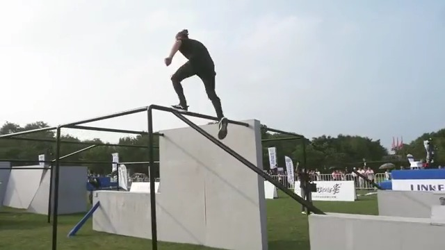
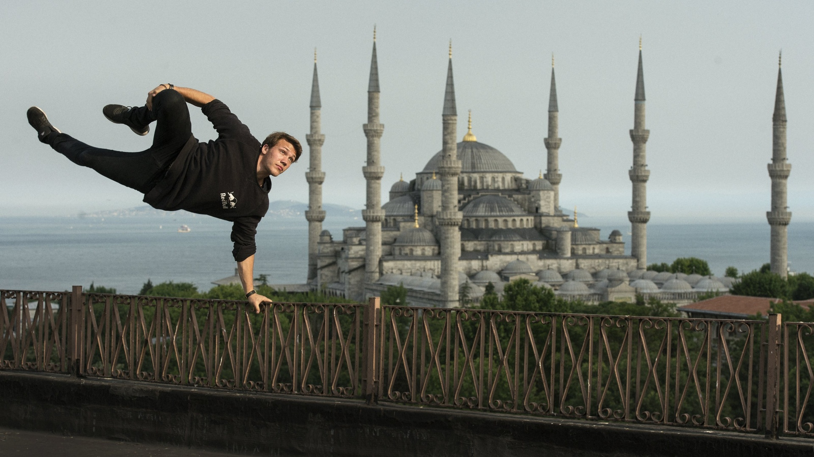
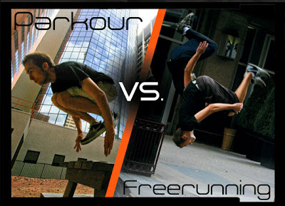

Parkour and Freerunning
Parkour
 Parkour is a training discipline using movement that developed from military obstacle course training. Practitioners aim to get from one point to another in a complex environment, without assistive equipment and in the fastest and most efficient way possible. Parkour includes running, climbing, swinging, vaulting, jumping, rolling, quadrupedal movement (crawling) and other movements as deemed most suitable for the situation. Parkour's development from military training gives it some aspects of a non-combative martial art.
Parkour is an activity that can be practiced alone or with others and is usually carried out in urban spaces, though it can be done anywhere. Parkour involves seeing one's environment in a new way, and imagining the potential for navigating it by movement around, across, through, over and under its features.
Parkour was developed in France, primarily by Raymond Belle, and further by his son David and the latter's group of friends, the self-styled Yamakasi, during the late 1980s. The discipline was popularised in the late 1990s and 2000s through films, documentaries, and advertisements featuring the Yamakasi.
Freerunning
 Freerunning is a way of expression by interacting with various obstacles and environment. Freerunning may include flipping and spinning. These movements are usually adopted from other sports, such as gymnastics, tricking or breakdancing. Freerunners can create their own moves, flows and lines in different landscapes. It is all about becoming creative in an objective environment. Practitioners of Freerunning usually do Parkour as well. Freerunning is often associated with Parkour by adding acrobatic and stylish moves, showcasing the art of movement. Freerunning is founded by Sebastien Foucan, who discussed the subject in Jump London in 2003. Foucan developed freerunning as a more inclusive form of Parkour.Parkour's military obstacle course training lends itself to martial art as a means of weapons avoidance and efficiently closing a distance to an opponent.
Difference
 According to discipline founders, parkour is an individual discipline of physical and mental control, while freerunning is a more theatrical and social sport of physical expression. In the real world, though, the differences between the two disciplines are blurry, and there can be confusion even among participants. Participants of parkour are called tracuers, and in freerunning they’re freerunners. In most parts of the world, both disciplines have only caught on in the last decade but are becoming increasingly popular, to the point that training courses can now be found in gyms and school athletic programs.